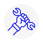
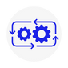
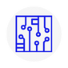

Sobre nosotros
Nuestra filosofía está basada en la actitud de servicio hacia nuestros clientes, durante 30 años hemos podido generar una excelente reputación de responsabilidad y compromiso. Nuestros clientes aprecian nuestro esfuerzo por hacer nuestros sus retos y compromisos. tenemos la satisfacción de hacer que nuestros clientes destaquen y sean reconocidos por el éxito en sus proyectos. La mejor carta de presentación son los testimonios de nuestros clientes a quienes dedicamos toda nuestra atención.
VER SERVICIOSServicios
Integración de sistemas robóticos
Desarrollo de soluciones personalizadas para integrar robots en líneas de producción existentes o nuevas. Esto incluye la adaptación de robots para tareas específicas, programación personalizada y asegurar que se integren sin problemas con otros sistemas y maquinaria.
Mantenimiento y reparación de robots
Servicios de mantenimiento preventivo y reparación para sistemas robóticos. Esto asegura que los robots funcionen de manera eficiente y reduce el tiempo de inactividad en la producción debido a fallas técnicas.
Consultoría y diseño de sistemas robóticos
Proporcionar asesoramiento experto sobre la selección y el diseño de sistemas robóticos adecuados para necesidades específicas de producción, incluyendo la elección de robots, EOATs (End-of-Arm Tooling) y software de control.
Capacitación y soporte técnico
Formación en el uso y mantenimiento de sistemas robóticos, así como soporte técnico continuo para resolver cualquier problema operativo o técnico que pueda surgir.

Automatización de procesos
Analizar los procesos de producción de los clientes y desarrollar soluciones de automatización utilizando robots. Esto puede incluir la automatización de tareas repetitivas, peligrosas o que requieren alta precisión.
Venta y alquiler de equipos robóticos
Se ofrece una amplia gama de robots y accesorios relacionados, tanto para la venta como en modalidad de alquiler, para adaptarse a las necesidades temporales o a largo plazo de los clientes.

¿Por qué trabajar con nosotros?
- Mejora de la eficiencia y productividad
- La implementación de soluciones robóticas puede significar una mejora sustancial en la eficiencia y la productividad de los procesos de producción.
- Reducción de costos a largo plazo
- A largo plazo, los robots reducen los costos operativos. Esto se debe a la disminución de errores, menor desperdicio de materiales, reducción de los costos laborales y menores tiempos de inactividad.
- Adaptabilidad y flexibilidad en la producción
- Se ofrece flexibilidad significativa para cambiar la producción de nuestros clientes según las demandas del mercado o para introducir nuevos productos sin necesidad de grandes inversiones adicionales en nueva maquinaria.
Blog
La Revolución de la Automatización: Cómo los Robots Están Transformando las Industrias
Estudios de caso de empresas que han implementado con éxito soluciones robóticas, destacando los beneficios en términos de eficiencia, reducción de costos y mejora de la calidad.
Leer mas ➝Maximizando la Eficiencia: Consejos para Mantener su Sistema Robótico en Óptimas Condiciones
Orientación sobre mantenimiento preventivo, identificación de señales comunes de problemas en robots, además de cómo realizar diagnósticos básicos.
Leer mas ➝